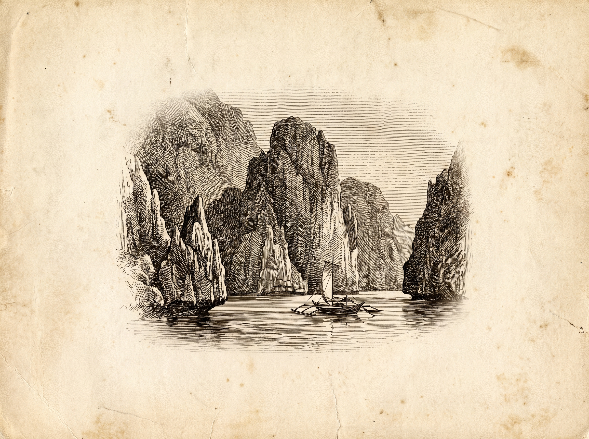

Extend the Trip
If you have the extra days, the islands are the reason to take them.
Palawan · the one to prioritise

El Nido, limestone cliffs, hidden lagoons, and island hopping tours labelled simply A, B, C and D, each covering a different set of islands, lagoons and beaches. Tour A takes in the Big and Secret Lagoons, Tour C the well known Secret Beach and Hidden Beach. Lunch, water, and snorkel gear are included on every tour.
Coron, further north, built around Kayangan Lake, regularly called one of the cleanest lakes in Asia, plus WWII Japanese shipwreck diving and snorkelling.
Puerto Princesa, the Subterranean River, a UNESCO World Heritage site, a 45 minute boat ride through a cave system, booked as a half day tour from the city.
Getting there: fly into Puerto Princesa for the underground river and the van connection to El Nido (5 to 6 hours by road), or direct to El Nido’s own airstrip. Note that as of March 2026 direct El Nido flights operate from Clark, north of Manila, not from NAIA, worth checking current routing before booking.
Boracay · the classic beach trip
White Beach, powder soft sand, and Puka Beach on the quieter northern tip. Island hopping tours stop at Crystal Cove and Puka Beach with snorkelling along the way, sunset paraw sailing on a traditional outrigger boat is worth doing at least once.
Getting there: fly into Caticlan (closest, then a short boat crossing) or Kalibo (cheaper fares, longer transfer). Best November to May, the dry Amihan season, calm seas and clear water.
Further afield
Cebu (old churches and whale sharks) and Siargao (surf and lagoons) are both worth a look if Palawan or Boracay do not fit your dates, ask and we are happy to point you the right way based on what you are after.